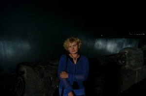
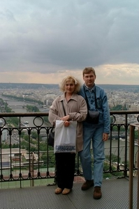
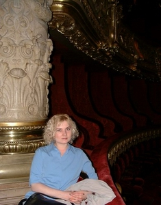
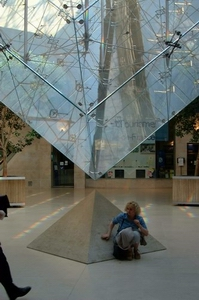

| Home Project "Perfect Client" project |
|  |
| NATASHA GLOTOVA | JUNIOR INTERIOR DESIGNER AND/OR DECORATOR |
|
43 Foxchase Ave., Woodbridge, ON, Canada, L4L9H5 |
INTERIOR DESIGNER'S ASSISTANT |
| E-mail: | |
| Phone: 416-727-3326 | Portfolio: design.migrennium.com |
|
PROFILE
Graduate from the Stratford Career Institute (SCI), the Interior Decorating & Design program (average grade: 100%). Creative personality with luxuriant imagination and good taste in planning the decor. Very reliable and hard working person. Thirst for experimenting and learning different styles and technologies. Highly professional in IT, computer science and software development. OBJECTIVE To obtain the position in the Interior Design and Decorating sphere that would give an opportunity to apply the acquired attainments and a huge desire to serve the Creativity, the Beauty, and the Humanity. |
KNOWLEDGE AND SKILLS
Painting Techniques
Computer Skills
|
|
EXPERIENCE
September, 2003 May, 2003 June, 1999 - March, 2003
EDUCATION April, 2003 - current 1988 - 1995 |
|  |  |  |
| Top Home Project "Perfect Client" project |